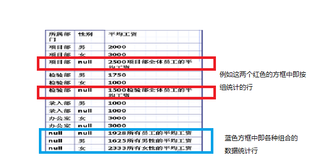
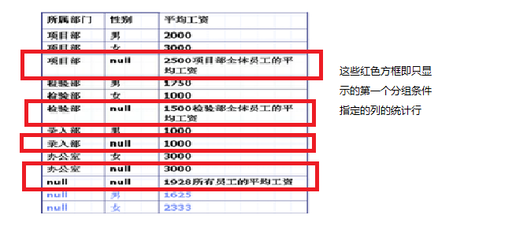

Select语句的基本结构如下：
Select [All | Distinct] select_list
[Into [new_table-name]]
Form {table_name | view_name}
[,{table_name2 | view_name2}
….,{table_name10|view_name10}]
[Where search_conditions]
[Group By group_by_list]
[Having search_conditions]
[Order By order_list [ASC| DESC]]
第一行语句中select_list表示需要检查的字段的列表，字段名称间用逗号分隔
All 指明查询结果中可以显示值相同的列，且为系统默认
Distinct 指明查询结果中如有值相同的列，则只显示其中的一列
第二行语句中Into子句用于把查询结果存放到一个新建的表中
new_table-name 指明新建表的名称
第三行语句中Form 子句指定需要查询的表注：只要Select中又要查询的列就必须使用From子句
table_name / view_name 指明Select 语句要用到的表，视图等数据源，该列表中的数据表名和视图名之间使用逗号分隔
第四行语句中 Where子句是制定数据检索的条件，以限制返回的数据行
第五行语句中Group By 子句指定查询结果的分组条件
第六行语句中 Having 子句指定分组搜索条件，通常与Group By子句一起使用，它与Where语句类似只是其作用对象不同，Where子句作用于表和视图，Having子句作用于组。
最后一行语句Order By 子句指定查询结果的排序方式，ASC是升序（系统默认），DESC 降序
下面具体介绍一下Group By 子句
ALL：表示返回所有可能的查询结果组合，即使此组合中没有任何满足Where子句的数据，分组的统计列如果不满足查询条件，则将由null值构成其数据
Cube：除了返回由Group By子句指定的列外，还返回按组统计的行，返回的结果按分组的第一个条件列排序显示，以此类推。统计行包括了Group By子句指定的列的各种组合的数
据统计
Rollup：只返回第一个分组条件指定的列的统计行，改变列的顺序会使返回的结果发生变化
举例：按所属部门分类，找出工资大于来2000的所有员工
下面两个图即分别是为Cube的返回结果和Rollup的返回结果


如何提高Select语句的效率
1，使用exists关键字检查结果集:不要用count（*）来检查结果集中是否包含行
2，使用标准连接代替嵌套查询：在执行嵌套查询时，SQL Server将执行内部的子查询，然后将查询结果返回给外部查询作为检索的数据源，最后执行外部的主查询。而在执行包含标准联接的查询时，SQL Server将要查询的仅仅是一个查询
3，有效避免整表扫描：使用索引，除了缺失索引外，可能导致整表扫描的另一种情况是在like子句的匹配条件的开始使用了%，如果这样将会调用整表扫描。